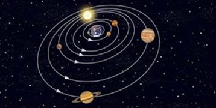
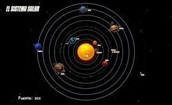
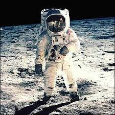

<!DOCTYPE html>
<html>

<head>
<title>Sistema Solar</title>
<meta charset = 'utf-8'>

</head>
<link rel= 'stylesheet' type='text/css' href='../css/estilos.css'>
</html>
<h1><body style = 'text-align:center;'><script>

/*
RAINBOW TEXT Script by Matt Hedgecoe (c) 2002
Featured on JavaScript Kit
For this script, visit http://www.javascriptkit.com
*/

// ********** cambia aquí

var text="Historia del sistema solar" // tu texto
var speed=80 // velocidad de movimiento 


if (document.all||document.getElementById){
document.write('<span id="highlight">' + text + '</span>')
var storetext=document.getElementById? document.getElementById("highlight") : document.all.highlight
}
else
document.write(text)
var hex=new Array("00","14","28","3C","50","64","78","8C","A0","B4","C8","DC","F0")
var r=1
var g=1
var b=1
var seq=1
function changetext(){
rainbow="#"+hex[r]+hex[g]+hex[b]
storetext.style.color=rainbow
}
function change(){
if (seq==6){
b--
if (b==0)
seq=1
}
if (seq==5){
r++
if (r==12)
seq=6
}
if (seq==4){
g--
if (g==0)
seq=5
}
if (seq==3){
b++
if (b==12)
seq=4
}
if (seq==2){
r--
if (r==0)
seq=3
}
if (seq==1){
g++
if (g==12)
seq=2
}
changetext()
}
function starteffect(){
if (document.all||document.getElementById)
flash=setInterval("change()",speed)
}
starteffect()
</script></body></h1>

<body>
<h4>el Sistema Solar se formó hace unos 4.600 millones de años fruto de un colapso gravitatorio de una nube molecular gigante.</h4>
<h2 style = 'text-align:center;color:white;'> Principales Teorías </h2>
 
<h3>Teoría geocéntrica</h3>
<div align="center"></div>
<h5 align="left">Antigua teoría que sostiene que la tierra es el centro del universo. Coloca la Tierra en el centro del Universo y los astros, incluido el Sol, girando alrededor de ella (geo: Tierra; centrismo: centro). Fue inventada por Aristóteles y estuvo en funcionamiento hasta el siglo XVI, en su versión completada por Claudio Ptolomeo en el siglo II a. C., en su obra El Almagesto, en la que introdujo los llamados epiciclos, ecuantes y deferentes. Fue reemplazada por la teoría heliocéntrica.</h5>
<h5 align="left">Durante mucho tiempo, los hombres creyeron que la Tierra estaba inmóvil en el centro del Universo y que todo el cielo se movía alrededor de la Estrella Polar.</h5>
<h5 align="left">La Tierra estaba asentada en el centro del mundo. Alrededor de ella, sujetos a múltiples esferas, giraban la Luna, Mercurio, Venus, el Sol, Marte, Júpiter y Saturno. Este universo estaba encerrado dentro de una última esfera en la cual las estrellas estaban incrustadas. Esta esfera giraba sobre si misma, de este a oeste, en un día. El Sol se paseaba alrededor de la Tierra de oeste a este en un año.</h5>

<h3>teoría heliocéntrica</h3>
<div align="center"></div>
<h5>Nicolás Copérnico (astrónomo polaco), es conocido por su teoría Heliocéntrica que había sido descrita ya por Aristarco de Samos, según la cual el Sol se encontraba en el centro del Universo y la Tierra, que giraba una vez al día sobre su eje, completaba cada año una vuelta alrededor de él.</h5>
<h5 align="left">Fue un gran estudioso de los autores clásicos y además se confesó como gran admirador de Ptolomeo cuyo Almagesto estudió concienzudamente. Después de muchos años finalizó su gran trabajo sobre la teoría heliocéntrica en donde explica que no es el Sol el que gira alrededor de la Tierra sino al contrario.</h5>
<h5 align="left">Esta teoría sin embargo también requería de complicados mecanismos para la explicación de los movimientos de los planetas, debido a la perfección de la esfera. Copérnico publica entonces un resumen en manuscrito. En sus comentarios establece su teoría en 6 partes, reservando la parte matemática para el trabajo principal, que se publicaría bajo el título "Sobre las revoluciones de las esferas celestes".</h5>
<h5 align="left">En 1616 La Iglesia Católica colocó el trabajo de Copérnico en su lista de libros prohibidos.</h5>

<h3>Armstrong nunca pisó la luna</h3>
<div align="center"></div>
<h5 align="left">Esta teoría a traído muchos dilemas y discursiones. Aunque parezca muy raro y de película hay gente que cree que el hombre nunca a llegado a la Luna, este tema tendría que estar en las curiosidades, pero lo he metido en este sector ya que al fin y al cabo es una teoría.</h5>
<h5 align="left">Que si la tecnología de la NASA en los sesenta no estaba lo suficientemente desarrollada como para realizar un alunizaje. Que si las fotografías de los astronautas transmitidas desde la Luna no incluían las estrellas en el oscuro cielo lunar. Que si en las fotografías de los astronautas del Apolo 11 plantando la bandera en la superficie lunar se ve cómo la tela se dobla y ondea.. y después de todo, no hay brisa en la Luna... Parece mentira que casi 50 años después de que se llegara a la luna el 20 de julio de 1969 todavía alguien siga creyendo en las teorías de la conspiración que aseguran que todo fue un montaje y que Armstrong, Aldrin y Collins (que a todo el mundo se le olvida siempre este último) llegaron a la luna y que Armstrong y Aldrin la pisaron. Porque parece que ya han desistido en que fue un montaje de Kubrik.</h5>
<h5 align="left">Esta no es la unica teoría que creen que un acontecimiento histórico ha sido un montaje : "La Tierra es plana", "la teoría de la evolución es falsa" y "el Holocausto nazi nunca existió". </h5>


<ul>
<li><a href='../index.html'>Inicio</a></li>
</ul>
<ul>
<li><a href='astrologia.html'>Astrología</a></li>
</ul>
<ul>
<li><a href='curiosidades.html'>Curiosidades</a></li>
</ul>
<ul>
<li><a href='unpocodehumor.html'>Un poco de Humor</a></li>
</ul>
<ul>
<li><a href='planetas.html'>Planetas</a></li>
</ul>
</body>
